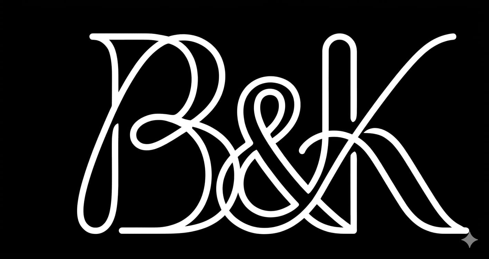

Історія бренду B&K розпочалася з великої мрії двох амбітних людей — Іллі Боярчука та Аліни Кравчук. Об’єднавши свої зусилля та бачення сучасного спортивного стилю, вони створили бренд, який став символом якості та нестримної енергії. Назва B&K — це не просто літери, це синергія прізвищ засновників, що гарантують персональну відповідальність за кожен виріб. Ілля завжди відповідав за стратегічний розвиток та інноваційні підходи, тоді як Аліна стала серцем дизайну та естетики бренду. Разом вони поставили собі за мету змінити уявлення про те, як має виглядати спортивний одяг нового покоління. Ми віримо, що одяг має надихати на рух та допомагати досягати нових вершин. Наша команда ретельно відбирає найкращі технологічні тканини, які забезпечують максимальний комфорт під час найінтенсивніших тренувань. Кожна лінія, кожен шов та кожен елемент дизайну проходять суворий контроль засновників. B&K — це вибір тих, хто цінує свій час і прагне виглядати бездоганно як у спортзалі, так і в ритмі великого міста. Ми не просто продаємо речі, ми створюємо спільноту успішних і активних людей, які не бояться викликів. Сьогодні B&K — це сучасне виробництво, де поєднуються традиції високої якості та передові цифрові технології. Ми постійно експериментуємо з кроєм та кольорами, щоб ви завжди були на крок попереду трендів. Наша філософія базується на чесності перед клієнтом та постійному самовдосконаленні. Ілля та Аліна продовжують особисто брати участь у розробці кожної колекції, вкладаючи душу в розвиток B&K. Приєднуйтесь до нашої історії, адже попереду ще багато перемог та нових горизонтів.